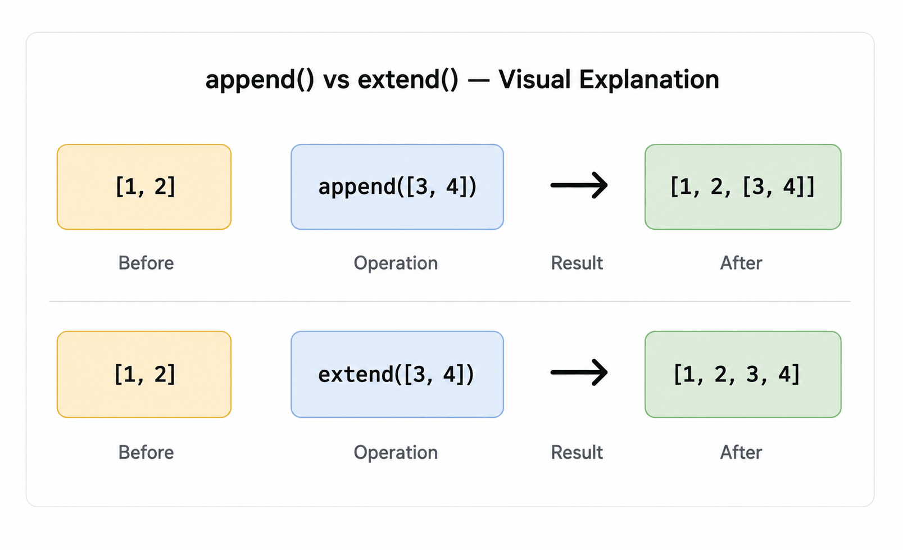

Next in Python Topics ▾
Python List Methods Explained (Python Docs 5.1) | append(), sort(), pop() & Beginner Guide
This page explains the official Python Lists documentation (Python Docs 5.1) in simple language. Lists are Python's most versatile data structure — and knowing all their methods is essential. This guide covers every list method with explanations, the famous fruits example from the docs, common mistakes, and interview questions.
By the end of this guide you'll know when to use append() vs extend(), how sort() and sorted() differ, why methods like sort() return None, and how to avoid the most common list pitfalls.
What is a Python List?
A list is an ordered, mutable collection of items. You can put anything in it — strings, numbers, other lists, even mixed types. It's the most commonly used data structure in Python, and it comes packed with methods that make working with sequences easy.
- Ordered — elements have a defined position, accessible by index
- Mutable — you can add, remove, and change elements after creation
- Allows duplicates — the same value can appear multiple times
- Any type — strings, numbers, booleans, other lists, all welcome
All Python List Methods — Complete Reference
The Python docs §5.1 covers all of these. Here's every method with its exact signature and what it does:
| Method | What it does | Returns |
|---|---|---|
list.append(x) | Add item x to the end of the list | None |
list.extend(iterable) | Add all items from iterable to the end — like appending a whole list | None |
list.insert(i, x) | Insert x before index i. insert(0, x) = front, insert(len(a), x) = same as append | None |
list.remove(x) | Remove the first item equal to x — ValueError if not found | None |
list.pop(i=-1) | Remove and return item at index i. Default (no index) removes and returns last item | Removed item |
list.clear() | Remove all items. Same as del a[:] | None |
list.index(x[, start[, end]]) | Return index of first item equal to x. Optional start/end to search a slice. ValueError if not found | int |
list.count(x) | Count how many times x appears in the list | int |
list.sort(*, key=None, reverse=False) | Sort the list in place. Use key= for custom sort logic, reverse=True for descending | None |
list.reverse() | Reverse the list in place | None |
list.copy() | Return a shallow copy. Same as a[:] | New list |
Knowing what a method does is only half the story. Knowing how fast it is becomes important when you're working with large lists or preparing for coding interviews.
| Method | Average Time Complexity | Why? |
|---|---|---|
append(x) |
O(1) | Adds to the end of the list. |
pop() |
O(1) | Removing the last item is constant time. |
insert(i, x) |
O(n) | Elements after the insertion point must shift. |
remove(x) |
O(n) | Python searches for the value before removing it. |
index(x) |
O(n) | Python scans the list until it finds the value. |
count(x) |
O(n) | Every element must be checked. |
extend(iterable) |
O(k) | k is the number of elements being added. |
sort() |
O(n log n) | Python uses the highly optimized Timsort algorithm. |
reverse() |
O(n) | Every element is swapped once. |
Interview Tip: Companies frequently ask why
append() is usually O(1) while
insert() and remove() are
O(n). Understanding this difference helps explain
why some list operations are much faster than others.
The Fruits Example — From the Python Docs
The Python docs show all the list methods in action with a single fruits list. Here it is, exactly as in the docs, with explanations for each step:
fruits = ['orange', 'apple', 'pear', 'banana', 'kiwi', 'apple', 'banana'] fruits.count('apple') # 2 ← 'apple' appears twice fruits.count('tangerine') # 0 ← not in the list fruits.index('banana') # 3 ← first 'banana' is at index 3 fruits.index('banana', 4) # 6 ← next 'banana' starting from index 4 fruits.reverse() fruits # ['banana', 'apple', 'kiwi', 'banana', 'pear', 'apple', 'orange'] fruits.append('grape') fruits # ['banana', 'apple', 'kiwi', 'banana', 'pear', 'apple', 'orange', 'grape'] fruits.sort() fruits # ['apple', 'apple', 'banana', 'banana', 'grape', 'kiwi', 'orange', 'pear'] fruits.pop() # 'pear' ← removes and returns last item # ['apple', 'apple', 'banana', 'banana', 'grape', 'kiwi', 'orange']
Kiddo extra — append vs extend
a = [1, 2, 3] # append() adds one item — even if it's a list a.append([4, 5]) print(a) # [1, 2, 3, [4, 5]] ← list inside a list b = [1, 2, 3] # extend() unpacks the iterable and adds each item individually b.extend([4, 5]) print(b) # [1, 2, 3, 4, 5] ← flat list

append() vs extend() — understanding how each method adds elements to a list.
Why Do List Methods Like sort() Return None?
You might have noticed that methods like insert, remove, or sort that only modify the list have no return value printed — they return the default None. This is a design principle for all mutable data structures in Python.
This catches beginners all the time. If you write new_list = my_list.sort(), you get None back — not the sorted list. The sort happens in place on the original list.
nums = [3, 1, 4, 1, 5, 9] # Wrong — sort() returns None, not a list result = nums.sort() print(result) # None # Right — sort in place, then use the original nums.sort() print(nums) # [1, 1, 3, 4, 5, 9] # If you need the original untouched, use sorted() instead nums = [3, 1, 4, 1, 5, 9] sorted_nums = sorted(nums) print(sorted_nums) # [1, 1, 3, 4, 5, 9] print(nums) # [3, 1, 4, 1, 5, 9] ← unchanged
sort() vs sorted() — Which One to Use?
Both sort data, but they work very differently:
| Feature | list.sort() | sorted() |
|---|---|---|
| Modifies original | Yes — in place | No — returns new list |
| Return value | None | New sorted list |
| Works on | Lists only | Any iterable (tuple, set, string...) |
| Speed | Slightly faster (no copy) | Slightly slower (makes a copy) |
| Use when | You don't need the original order | You need both the original and sorted version |
students = ["Sneha", "Palak", "Rohan", "Arjun"] # sort() — modifies in place, returns None students.sort() print(students) # ['Arjun', 'Palak', 'Rohan', 'Sneha'] # sorted() — leaves original alone, returns new sorted list scores = [88, 45, 92, 71] top = sorted(scores, reverse=True) print(top) # [92, 88, 71, 45] print(scores) # [88, 45, 92, 71] ← unchanged # Custom sort with key= words = ["banana", "apple", "kiwi", "pear"] words.sort(key=len) # sort by word length print(words) # ['kiwi', 'pear', 'apple', 'banana']
Common Python List Mistakes
sorted_list = my_list.sort() gives you None. Use my_list.sort() and work with my_list, or use sorted_list = sorted(my_list) instead.
a.append([4, 5]) adds the list as a single nested element. a.extend([4, 5]) adds each item individually. Choose between them based on whether you want the iterable as one item or want to add its elements individually.
a.pop() raises IndexError: pop from empty list. Check if a: before popping, or use a try/except block.
a.remove(2) on [2, 3, 2] gives [3, 2] — only the first 2 is removed. Loop to remove all occurrences: [x for x in a if x != 2].
From the Python docs: [None, 'hello', 10] doesn't sort because integers can't be compared to strings. Make sure your list is homogeneous before sorting.
b = a.copy() creates a new list, but if a contains other lists, those inner lists are still shared. Use copy.deepcopy(a) for a fully independent clone.
Python List Interview Questions and Answers
append(x) adds x as a single item — if x is a list, it becomes a nested list. extend(iterable) unpacks the iterable and adds each element individually. [1,2].append([3,4]) gives [1, 2, [3, 4]]. [1,2].extend([3,4]) gives [1, 2, 3, 4].None to make it clear the operation happened on the original. This prevents confusion about whether you're working with the original or a new object. Use sorted() if you need the sorted version as a return value.remove(x) searches for the first item equal to x and deletes it — no return value. pop(i) removes the item at index i and returns it. If you need the removed value, use pop(). If you need to remove by value (not position), use remove().list.index(x) returns the index of the first occurrence of x. It raises ValueError if x isn't in the list. To search within a slice, use list.index(x, start, end). To safely check existence first: if x in my_list: idx = my_list.index(x).list.copy() creates a new list with the same elements — equivalent to a[:]. It's shallow, meaning nested objects (like lists inside the list) are not copied — both the original and the copy point to the same nested objects. For fully independent copies, use import copy; copy.deepcopy(a).list.sort(key=len) or sorted(my_list, key=len). The key parameter accepts any function — Python calls it on each element and sorts by the result. For descending order by length: sorted(my_list, key=len, reverse=True).Python Lists FAQ
[1, 2, 3]. Lists can hold any type, allow duplicates, support indexing and slicing, and come with a full set of built-in methods for adding, removing, and reordering elements.append(x) adds one item to the end. extend(iterable) adds all items from another iterable. insert(i, x) adds x at a specific index. For merging two lists, extend() is usually what you want — append() would nest the second list inside the first.list.sort() sorts the list in place and returns None. sorted(iterable) returns a new sorted list and leaves the original untouched. Use sort() when you don't need the original order. Use sorted() when you need both the original and sorted version, or when sorting a non-list iterable.remove(x) removes the first item equal to x. pop(i) removes and returns the item at index i (default: last item). del a[i] deletes by index with no return value. Use pop() when you need the removed value. Use remove() when you know the value but not the index.list.count(x). It returns the number of times x appears in the list. From the Python docs: fruits.count('apple') on ['orange', 'apple', 'pear', 'apple'] returns 2. Returns 0 if the item isn't in the list.Functions (4.8) · While Loop · For Loop · If Statements · Arbitrary Arguments List · Default arguments · Dictionaries (5.5) · Tuples (5.3) · Sets (5.4) · List Comprehensions · Looping Techniques Lists as Stack and Queue · Break Continue & Pass · Nested List Comprehensions · Keyword Arguments · Special Parameters · Sets Advanced . String Methods . String Methods- Advanced(Part 2) ·